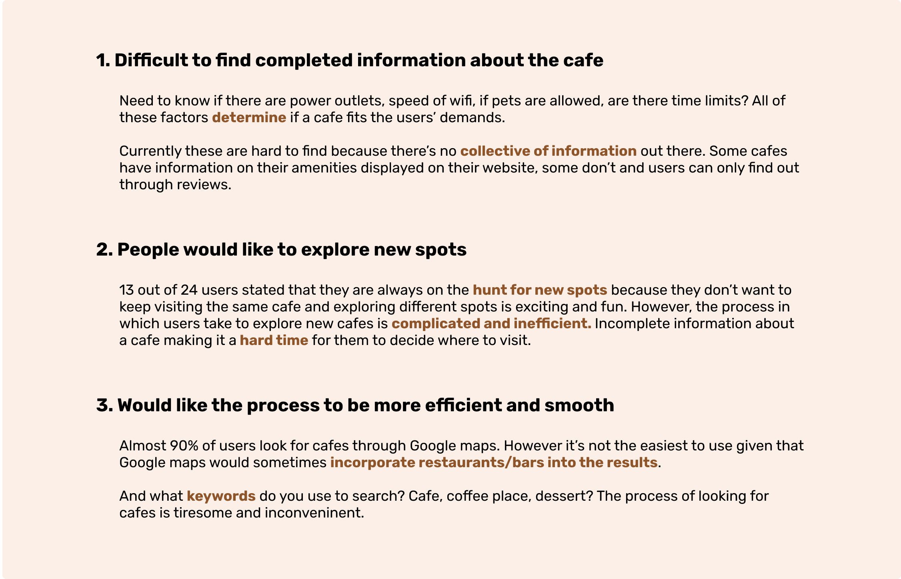
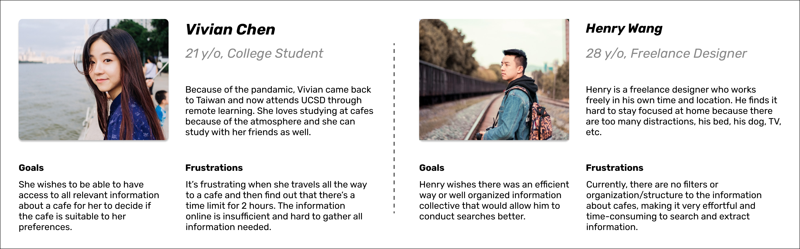
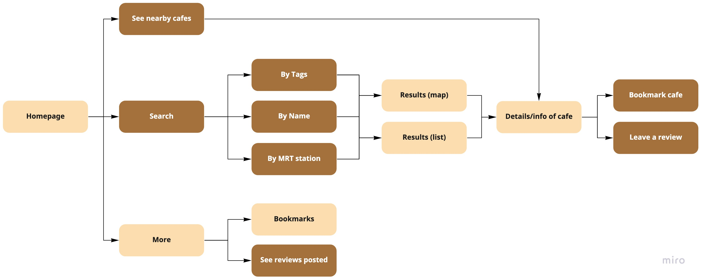

Role/Scope
User Research, UI/UX Design
Team
Personal Project
Tool
Figma, Origami
Duration
Jan - Feb 2021
PROBLEM
Since the pandamic, a lot of international students studying abroad flies home and continue to attend university through online learning. Because of that, the demand to look for cafes that are more suitable for working has increased. But currently, there are no platforms that offers easy search of cafes with relevant information that better informs the users.
OUTCOME
To address this problem, I created a mobile application to help cafe goers easily explore local cafes and see relevant information.
User Research
Method: Surveys (24), in-person / online interviews (7), Heuristic Evaluation
Research Insight
I created a survey and posted them in social media groups. I received 34 response in total. I also conducted interviews with 7 participants to collect more personal experiences.
Research Synthesis
After gathering the data, the 2 main frustrations that people experience with finding cafes are:

Personas

Project Objective
"How might we helps users conduct efficient and easy searching with relevant information made available?"
I aimed to create a minumum viable product for now and improve upon it through iterations and usability testing later on. The goal for this project is to create a mobile application that improve cafe goers' experience with searching for suitable cafes.
Exploration and Ideation
Prioritization mapping
Since the goal at the current stage is to create a minimum viable product, I came up with a list of features and functionalities that are either present in other similar application or requested/mentioned by interview participants. I then sort them into a prioritization map to clarify the direction and scope of the product.

User flow – version 1
After taking into account feature priorities, I created a user flow map to see how the exploration process would go.

User flow – version 2
I created wireframes according to this user flow but then I realized that the flow needed to be modified. Features of the cafes matter a lot to the users. Like if it has power outlets for its customers, if there's unlimited time, etc. I changed the user flow with the goal of keeping the process simple and easy.

Testing and iterations
1. Home page

At first, the approach was to allow users to quickly see different categories of cafes like for hangout, for study and work, quiet, pet friendly, etc. I later realized that this would actually complicate the process since there are more features/filters that users care about. The design decision was made based on the observation of user behavior that location matters a lot so I iterated the design to show cafes nearby.
2. Search

Final Design

Reflection
1. Not everything is necessary
When I was designing the navigation, I realized that having a navigation bar at the bottom isn't necessary since the purpose of this product is for users to search and explore with ease. It's easy to fall into the pattern of thinking some elements are necessary but when you take a step back and think about what users really want, a lot of elements can be eliminated.
2. Consider what users need and want at each stage
I found that asking myself: "at this stage of using the product, what would the users be thinking?" was very helpful to me in desiging the flow and experience. For example, when searching, the navigation button is probably not needed since at that stage, the users' purpose is to search, not search and navigate to somewhere else.